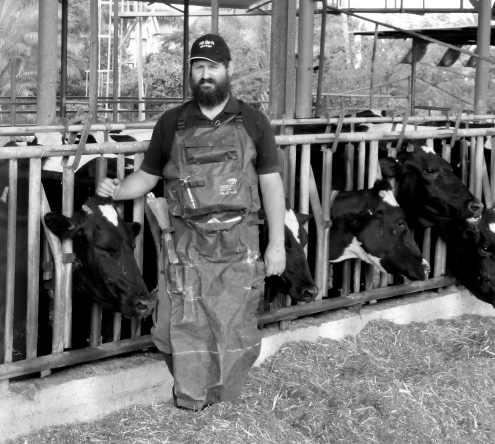

Talented Doctor
When Dr. Ofer Steier was in school, he was labeled as a child who was unfit for an academic program. * When he became a baal t’shuva, his father said, “Be anything, just not a Chabadnik.” * Today, Dr. Steier is a veterinarian. Between operations and inoculating cows he is mekarev Yidden to Torah, Ch

I met Dr. Ofer Steier for the first time five years ago when he and his wife Inbal came to my parents for Shabbos. Dr. Steier, who looked like a newbie, was young and clean-shaven, and wore a white knitted yarmulke. He sat next to his wife who looked like an ardent Lubavitcher. If at first I thought this was a case in which the wife was ahead of her husband, when I heard the young doctor’s story and how much iskafia and is’hafcha he had done in his life, I was amazed.
We recently met again. This time, Dr. Steier had a beard and wore a silk sirtuk and a hat. He was learning Chassidus before davening on Shabbos. If not for the smile and the sparkling, determined look in his eyes, I’m not sure I would have recognized him.
The next day, I asked him to tell me his life story and how he became a Lubavitcher, so that our readers could see how “nothing stands in the way of one’s will,” and how harmony can be preserved even when the two people living together are as different as can be.
POISONOUS ATMOSPHERE
Ofer was born in Tel Aviv in the 60’s. His mother had been raised in a traditional home where they kept Shabbos and kosher, but it was his father who set the tone in his home. The kitchen was treif, Jewish holidays were not celebrated, and Jewish concepts were off-limits. When his father found out that religious Jews were moving into Tel Aviv, he moved his family to Kibbutz Ashdot Yaakov in the Jordan Valley, far away from any hint of religiosity. His father even started an organization whose goal was to help religious Jews drop out of religious life and acclimate to a secular lifestyle.
Ofer grew up hearing horror stories about people who became baalei t’shuva and how this caused the break-up of families. Conversations in their home revolved around consultations with lawyers to save the children of baalei t’shuva or at least to save family property so that it didn’t fall into the hands of the baal t’shuva, along with requests for emotional support for a spouse and children when a family member went off the deep end and did t’shuva.
To Ofer, religion was something foreign. Today, as a Lubavitcher Chassid, he sees things from a different perspective.
“In recent years, they are no longer fighting against religion in kibbutzim. They are simply growing up in utter ignorance about anything Jewish. They celebrate holidays with the absence of any religious content. For example, Shavuos, Mattan Torah, is celebrated as an agricultural holiday by dancing with produce. Even if they eat matza and chametz on Pesach and it looks like disdain for religion, it’s not. It is the third and fourth generation that grew up in abysmal ignorance.
“I was sure there is a Creator, but there was nothing Jewish in my world to translate this belief into action. I remember speaking to Hashem as a boy (although, when I got older, I tried pushing this belief away), but I grew up completely ignorant. Of course I was exposed to Tanach, but concepts like the ‘Mishna’ and ‘Gemara’ were foreign to me.”
I asked Dr. Steier to pause in his chronological account and to jump ahead to his father’s relationship with him now, after he has become a baal t’shuva.
“My father is no longer involved with his organization against baalei t’shuva. Obviously, my becoming religious was very hard for him and for me. Grandchildren, my children, whose connection with their grandparents is pure and void of personal biases, are the ones who can reestablish ties between parents and children.”
Apropos of grandchildren, he is reminded of a story. Their oldest child was home-schooled until mandatory school age. He was a very special, charming child with a beautiful appearance. He had a gorgeous shock of hair. The grandfather, uncles and cousins loved him and enjoyed hearing his chochmos. Then, at the age of three, his hair was cut and he wore a yarmulke and had peios. The extreme transition from a cute child to a dos (pejorative term for religious person) turned his grandfather off at first, but then the child’s natural charm won him over and united the family.
Dr. Steier has advice for people in his situation:
“Debates are not helpful. Even explanations are not convincing. I learned from experience that when you argue or try to explain, or to present the Torah’s view or even defend religious people, it just doesn’t work. After consulting with my mashpia, I am careful to avoid any loaded topic even if it’s coming from my family and not from me. Even when they ask a question, I refer them to someone from whom they can get an answer and don’t express my opinion.”
A FIRM COMMITMENT AT THE END OF A NON-CHASSIDIC “FARBRENGEN”
Back to his life story:
At a point when Ofer had no good job prospects, he sat with a childhood friend for a sort of farbrengen. It wasn’t a Chassidishe farbrengen in the usual sense, but it did have plenty of Ahavas Yisroel, caring and closeness. They sat together for an entire night and tried to analyze Ofer’s personality, character and hidden abilities. During their conversation they polished off two bottles of whiskey and in the end, they concluded that he should become a veterinarian.
“When I began to pursue this career, I realized how hard it was. I had a relative who got a 93 in biology and over 700 points on her psychometric exams (similar to SAT) and yet, she remained on the waiting list a long time for vet school and was never accepted.
“When I looked into places in the world where veterinary studies could be pursued, we learned that in Holland it works by lottery. In other words, you can study for years and in the end, not be accepted. In South Africa, because of the reverse discrimination, only blacks got jobs. In the US, the education was very expensive. The remaining options were Spain, Germany, or Italy. I picked Italy.
“When we arrived there, Inbal, my wife, studied jewelry design and worked in that field while I studied. My classes were much harder than I had anticipated. At first, we took a crash course in Italian. Easy conversation in Italian is one thing, but speaking fluently, not to mention learning in Italian, is very hard. Italian is one of the most complex languages because it has fourteen tenses.
“I learned that nothing stands in the way of persistence; you just have to want it. I began translating all my textbooks from Italian into Hebrew and learned orally. I sat for hours without getting up and reviewed names, concepts, medical terms and various scenarios.”
After five years of studying all kinds of animals including horses, pigs, and rabbits, Ofer completed the course work and then decided to specialize in animals that chew their cud, i.e. kosher animals. However, when he returned to Eretz Yisroel to work in this field, he was in for a disappointment.
“I started by doing rounds with vets who care for cows. I worked with a doctor who hired me under ridiculous terms. After six years of work, I reached a salary level of 6000 shekels a month (equivalent to about $1550).”
During those years, Ofer’s wife had begun taking an interest in a life of Judaism and Chassidus. He remained aloof. He knew about Shabbos and kashrus, but did not observe them. Nevertheless, when he decided to open his own medical office, he decided not to work on Shabbos, as his wife requested. In emergency situations he would have a non-Jew substitute for him.
***
Shortly after they married, Inbal became interested in Judaism. Spirituality had always been important to the couple, and was especially important to Inbal, but their searches were always in the direction of mysticism, New Age philosophy and other sorts of Eastern ideas.
“Judaism, which is the most spiritual of all, did not appeal to us,” said Dr. Steier. “Due to the massive brainwashing in our schools and the media, religion was viewed as something dark, frightening, distant, and threatening. This is why most people whose souls awaken a bit veer off to the avoda zara philosophies instead of looking in the right places.
“One day, my wife was exposed to authentic Judaism as it is illuminated by the light of Chassidus and loved it. As for me, I was turned off. The more she got involved, the more I kept away. Each of us staked out his/her position and at a certain point, she had become a Lubavitcher with a wig and a kosher home that any Lubavitcher would eat in, while I wasn’t even shomer Shabbos.”
UNEXPECTED ENCOURAGEMENT
Inbal Steier’s journey to Chabad began with Mrs. Chanie Etrog, a childhood friend who had become a baalas t’shuva. She took Inbal to Mrs. Rivka Schildkraut, a shlucha in Haifa.
“Most of Inbal’s progress was done alone, though in consultation with rabbanim that the Rebbe simply sent to her. Each time it was the right shliach in the right place.”
This state of affairs went on for seven years! Despite the gaps between them, the couple understood that their relationship was no less important than progress or lack of progress in mitzva observance.
Then, despite his inoculation against Chabad, Dr. Steier was encouraged to go in the direction of Chabad.
“At a certain point, due to my wife’s encouragement, I went to a shiur at Moshava Migdal where I met R’ Mordechai Alon. Although I wasn’t davening at that point, I agreed to attend shiurim which I labeled ‘intellectual.’ To my surprise, R’ Alon, whom I considered a moderate and not an extremist like Lubavitchers, quoted the Rebbe nonstop. He referred to many sichos in Likkutei Sichos, taught Tanya, and told many stories about the Rebbe. That broke down my opposition to Chabad and consequently, to Torah and mitzvos. Due to the encouragement and the significant advancement I made in religious observance, thanks to R’ Alon, we decided to move to Moshava Migdal.
“During our stay at Migdal, we became very close with the shluchim, Rabbi and Mrs. Gruzman. My negative feelings towards Chabad were completely eradicated. We got to know the Gruzman children through whom we got a true perspective about Oz, our oldest son. We knew that if we wanted him to grow up as a Chassid, he would have to attend a Chabad school. There was no other way.
“The shliach at Kibbutz Yifat, R’ Kellman, whom I knew through the Dishon family, invited us for Shabbos to Migdal HaEmek. That is where I met R’ Dubroskin. That Shabbos, I got a big hug from all the people in that warm community and the shluchim. We decided to move to Migdal HaEmek so that Oz could attend a Chabad preschool and then the Chabad elementary school.”
FROM A BEARD TO A SIRTUK TO A HAT
I met Dr. Steier for the first time on the first Shabbos after their move to Migdal HaEmek. Although the journey towards Torah and mitzvos was long, exhausting, and difficult, the path from religious Jew to a Lubavitcher Chassid was speedy and pleasant.
Each change Ofer made in his Lubavitcher appearance was a story. The beard, for example, was an easy decision. It was Chol HaMoed Sukkos and being aware of the Halacha, he refrained from shaving. R’ Mordechai Almaliach, a Chassid from Migdal HaEmek, who was going through his own journey to Chabad and knew how hard (emotionally) it was to grow a beard, encouraged Ofer to keep the beard. Even his children, who watched as their father was starting to look like a Lubavitcher, urged him on. “Abba, we want you to have a beard! Please!” So instead of growing a beard, he allowed his beard to grow.
Then came the sirtuk. The Steier family members were guests of the Spayesky family of Migdal HaEmek. During the meal, the host suggested that he try on a sirtuk. The guest agreed, “Just to see what it feels like.” He ended up wearing it all Shabbos. The next day, he went to buy his own sirtuk. After that, Dr. Steier wore a sirtuk to the Chabad shul every Shabbos, though he wore no hat.
When he attended the Shabbaton for Lubavitcher doctors, someone who did not know his name referred to him as “Mr. Sirtuk without a hat.” As farfetched as it sounds, this is what convinced Ofer to buy a hat. “Although I must say that it was one of the hardest decisions I’ve ever made,” he said with a big smile.
LAMPLIGHTER IN THE BARNYARD
Dr. Steier passed all the tests and requirements and is a successful veterinarian who is very much in demand. When I went to meet him during his workday at a barn on a moshav, I saw him operate on a cow’s udder.
Most of the calls he gets are about a cow that does not give enough milk. Sometimes, these are gynecological and hormonal problems, and sometimes they are problems with internal organs. Some visits are to give an injection to a sick calf or to provide an inoculation for a newborn calf. There are also orthopedic problems like a cow with a broken leg or a cow that needs a pedicure when it doesn’t walk properly.
He uses the time spent in the company of farmers well:
“It starts by being a role model,” he says with a smile. “To show them that a Chassid is straight and someone who cares. Sometimes, as a result of the negative spin that is regularly promulgated in the media, I get complaints against religious Jews and I try to present the Torah view in the most dignified manner. Most of the time, when people hear this from a reputable doctor, they accept it.”
When I asked Dr. Steier to tell me some stories about his influence on others, he was uncomfortable since he doesn’t see himself as a mashpia, but he finally acceded to my request:
“One of the farmers I worked with had a crisis of faith upon the passing of his brother. He even considered ending his own life. I recommended that he learn the maamer about the copper snake in Chassidus M’vu’eres, which talks about the hardships and judgments that come to the world and how to overcome them. Thanks to the maamarim, he got out of his funk and was greatly strengthened in his Yiddishkait. Now, he always asks me to bring him the D’var Malchus and Chassidic works.”
On another occasion, a farmer told him that a friend of his had not treated him nicely. He was angry about this and told everyone that he was going to take revenge. Instead of telling him off, Dr. Steier told him the story about Kamtza and Bar Kamtza and how that led to the churban and galus. It was anger and the desire for revenge that caused suffering for generations to come. He gently suggested that the farmer “bring the Geula” and rise above personal considerations.
Dr. Steier, a Lubavitcher dressed as a veterinarian, is a mobile shliach whom people turn to with all their Jewish, religious and Chassidic questions. He advises everyone who asks for help to write to the Rebbe through the Igros Kodesh. As for those who want more, he invites them to attend a shiur in Chassidus “where you can hear more from someone who knows much more than I do.”
TALENTED DOCTOR
Dr. Steier, it turns out, is an expert in the laws of treifus. He said, “I’ve been successful in getting the concept of ‘kosher surgery’ accepted in veterinary medicine. Any hole that goes through an animal’s inner organs, such as the trachea, lungs and digestive organs, makes the animal a treifa. Although the animal may continue to live many more years, it is forbidden for us to eat it. It is also forbidden to drink its milk, and when it is slaughtered, it cannot be shechted according to Halacha.
“When I first started in this field, I didn’t know about this. I remember that a Lubavitcher friend, who spoke with me about it with great sincerity, made a great impact on me even though I wasn’t religiously observant yet. It is much easier for a veterinarian to operate on an animal without having to consider what the best way of reaching the organ is. For example, when there is a prolapsed stomach that needs to be put back in its place, you need to insert a needle into the animal in order to sew it up. When the doctor doesn’t see exactly where the needle is going, there’s a 99% chance that an organ will be perforated all the way through. Although from a medical perspective that’s fine, from a halachic perspective, the animal is a treifa.
“Now that I’m aware of these problems, I hold the needle in such a way that it is entirely in the palm of my hand with the tip pointed towards my palm, and it’s only when I reach the place that I need to sew that I do what I need to do carefully, being aware of the organs nearby. I remove my hand and the needle in the same way. Also, rather than move my hand among the inner organs, I move my hand through the fat, which, even if that is perforated, does not render an animal a treifa.
“I once sat and discussed this topic with R’ Landau, i.e. how it is that from a medical standpoint, the animal is not treif (i.e. it won’t die within the year), while from a halachic standpoint it is. We came to the conclusion that since the inner organs touch one another, it is very possible that even if a hole was made, another part of the flesh covered the hole and over time, the hole healed and closed up. So although it is not considered a hole from a medical standpoint, the Halacha considers it a treifa even if the hole was there for a second.
“In Argentina, there is a widespread problem with cows in that their stomachs swell up and press on and block the lungs. This deprives the animal of air and it dies. The treatment is simple but causes it to become a treifa. They have a hollow knife with which they extract the air. The animal breathes comfortably but is treif. Because of this problem, many animals abroad are invalidated for sh’chita. Here in Eretz Yisroel, there is more awareness of these problems and other methods are used. I put the instrument down through the throat or use medications to treat the problem without causing tarfus.
“The meat and milk in Eretz Yisroel are definitely more kosher than abroad. There is a lot of awareness here of the problems that result from operating on animals. There are guidelines about working with mashgichim and every animal has a file with its medical history. Nevertheless, the truth is that a mashgiach can’t really know what is going on inside the animal and in principle, you cannot rely 100% on eating an animal that was operated on.”
Menachem Mendel Arad. "Talented Doctor." Beis Moshiach, no. 855 (November 8, 2012).